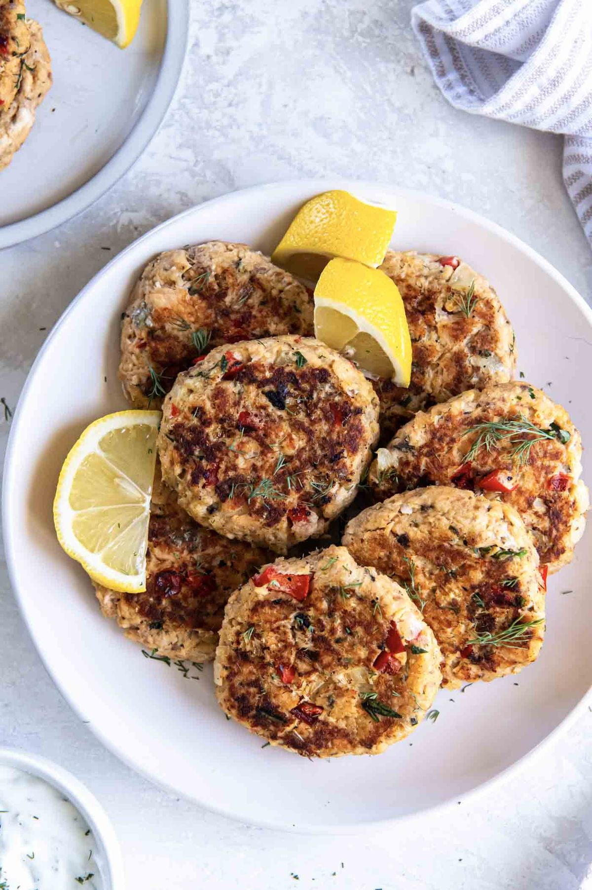

Canned Salmon Patties

- Meal
- Dinner
- Serves
- 6
- Protein
- fish (canned salmon)
- Cook
- stovetop · 30 min active / 40 min total · easy
- Make-ahead / leftovers
- yes / yes
- Mediterranean
- yes
- WW tier
- light
- Status
- Trying out (probation)
Allergy: Contains fish or shellfish — not for a fish-allergic eater; same-mix chicken patties are in this card
Kristine's canned-salmon patties — salmon, sautéed onion and red pepper, panko, egg, Greek yogurt, Dijon, lemon, dill — pan-fried in olive oil with a lemon-dill yogurt sauce. The cheap fatty-fish route Diet Lens asks for: two pantry cans cover the family.
Ingredients
Patties
- 6 Tbsp olive oil, divided
- 1 cup finely chopped yellow onion
- 1 cup finely chopped red bell pepper
- 2 cans (14.75 oz) salmon, drained (skin/bones removed or mashed in — see Notes)
- 1 cup panko
- 2 large eggs, lightly beaten
- 1/2 cup plain Greek yogurt (or mayo)
- 1/4 cup chopped parsley
- 2 Tbsp lemon juice
- 2 Tbsp Dijon mustard
- 4 tsp chopped fresh dill (or 1 1/2 tsp dried)
- 2 tsp garlic powder
- 1/2 tsp salt, 1/2 tsp pepper
Yogurt-dill sauce
- 1 1/2 cups plain Greek yogurt
- 2 Tbsp lemon juice
- 1 Tbsp chopped dill (or 1 tsp dried)
Fish-free fallback (same mix, chicken)
- 1 can (12.5 oz) chicken, drained, + 1/4 of the binder mix set aside before the salmon goes in (see step 2)
To serve: brown rice or roasted potatoes, and a green vegetable or salad
Method
- Sauté the onion and pepper in 2 Tbsp oil over medium ~3 minutes until soft. Cool slightly.
- In a large bowl, stir together the onion-pepper mix, panko, eggs, yogurt, parsley, lemon juice, Dijon, dill, garlic powder, salt, and pepper. Scoop about 1/4 of this mixture into a second bowl for the fish-allergic eater and mix in the canned chicken.
- Gently fold the drained salmon into the main bowl.
- Shape ~1/3-cup portions into 1/2-inch-thick patties (about 16–18 salmon, 4–5 chicken) on parchment.
- Cook the fish-free chicken patties first in a clean skillet with 1 Tbsp oil over medium, 3–4 minutes per side. Move them to a plate and cover.
- Cook the salmon patties in batches with the remaining oil, 3–4 minutes per side, until golden. Lower the heat if they brown too fast.
- Whisk the yogurt sauce and serve.
Notes
- Scaled ~×2 from Kristine's 15 oz salmon / serves 4 — two 14.75 oz cans (the standard Aldi/Walmart size).
- Fatty fish ✓ — canned salmon counts toward the fatty-fish quota and is one of the cheapest ways to hit it. The soft bones are edible calcium; mash them in or pick them out for kids.
- Fish-free swap: the fish-free patties come from a split of the binder before salmon touches it, and cook first in a clean pan. Canned chicken is already a pantry item (Chicken Salad).
- Make-ahead: shape patties up to a day ahead; they also freeze raw on a sheet then bagged.
- Mediterranean ✓: olive oil, fish, vegetables in the mix; serve with brown rice or potatoes. light.